CNNs, RNNs & Transformers
A feedforward network treats its input as an unstructured list of numbers. But real data has structure — pixels near each other belong together, and words arrive in an order that matters. This chapter covers three architectures, each of which builds a different assumption about structure directly into the model: locality for images, recurrence for sequences, and learned pairwise attention for everything else.
Part 5.1 · Convolutional Neural Networks
A digital image is just an array of numbers. A grayscale image of height \(H\) and width \(W\) is a matrix in \(\mathbb{R}^{H\times W}\) whose entries are intensities; a colour image is a tensor in \(\mathbb{R}^{H\times W\times 3}\), one channel each for red, green and blue. Everything a vision model does is arithmetic on that array.
The obvious move is to flatten it and feed it to the feedforward network from Chapter 4. Two things go wrong immediately.
A modest \(224\times224\) colour image has \(224\times224\times3 = 150{,}528\) numbers. Connect that to a single hidden layer of 1000 units and you need over 150 million weights — for one layer, on one small image. Scale the image and the count grows with its area.
Worse, flattening throws away the very thing that makes an image an image. Pixel \((i,j)\) and pixel \((i,j+1)\) are neighbours, but after flattening they are just two entries in a long vector, no more related than any other pair. A dense layer would have to learn that adjacency from data — and it would have to learn it separately for every position, because a cat detector trained in the top-left corner tells the network nothing about the bottom-right.
Convolution fixes both at once with two structural assumptions. Locality: useful features — edges, corners, textures — are local, so a unit only needs to look at a small patch. Translation equivariance: a feature that is worth detecting in one place is worth detecting everywhere, so the same small set of weights is reused at every position. That reuse is called weight sharing, and it is why a convolutional layer's parameter count does not depend on the image size at all.
The convolution operation
Given an input \(\mathbf{X} \in \mathbb{R}^{H\times W}\) and a kernel (or filter) \(\mathbf{K} \in \mathbb{R}^{F\times F}\), the feature map \(\mathbf{Z}\) has entries
\[ Z_{i,j} \;=\; \sum_{u=0}^{F-1}\sum_{v=0}^{F-1} K_{u,v}\, X_{\,i\cdot S + u,\; j\cdot S + v} \;+\; b, \]
where \(S\) is the stride — how far the window moves between positions — and \(b\) is a single bias shared across the whole map. The result is usually passed through a nonlinearity, most often ReLU.
Strictly, the formula above is a cross-correlation; true convolution flips the kernel in both axes. Since the kernel is learned, the flip is absorbed into the learned weights and makes no practical difference, so essentially every deep learning framework calls this operation convolution. We follow that convention.
Each output value is a single dot product between the kernel and the patch of input beneath it. Slide the window across the image and you get a whole feature map — a picture of where in the input that particular pattern occurs.
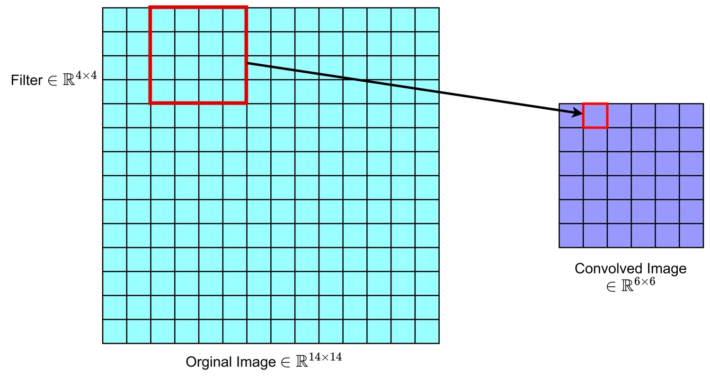
Output size arithmetic
Sliding a \(F\times F\) window over an \(H\times H\) input shrinks the result: there simply are not as many valid positions as there are pixels. Padding adds \(P\) rings of zeros around the border to compensate, which also lets the kernel reach the edge pixels properly. The output size is
\[ H' \;=\; \left\lfloor \frac{H + 2P - F}{S} \right\rfloor + 1. \]
A \(14\times14\) input with a \(4\times4\) kernel, stride \(2\), no padding:
\[ H' = \left\lfloor \frac{14 + 0 - 4}{2} \right\rfloor + 1 = \left\lfloor 5 \right\rfloor + 1 = 6, \]
so the feature map is \(6\times6\).
AlexNet takes a \(227\times227\times3\) input and applies 96 kernels of size \(11\times11\) with stride 4 and no padding:
\[ H' = \left\lfloor \frac{227 - 11}{4} \right\rfloor + 1 = 54 + 1 = 55, \]
giving a \(55\times55\times96\) output. The layer holds \((11\cdot11\cdot3)\cdot 96 = 34{,}848\) weights — about 35K, plus 96 biases. A dense layer mapping the same \(227\cdot227\cdot3 = 154{,}587\) inputs to the same \(55\cdot55\cdot96 = 290{,}400\) outputs would need \(4.49\times10^{10}\) — over a million times more.
Valid padding means \(P = 0\): only positions where the kernel fits entirely inside the input are used, and the map shrinks by \(F-1\) per axis. Same padding chooses \(P = \lfloor F/2 \rfloor\) which, with \(S = 1\) and odd \(F\), gives \(H' = H\) exactly. Same padding is the default in most modern architectures because it lets you stack many layers without the spatial size dwindling away.
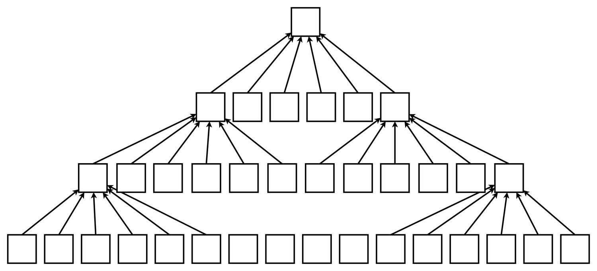
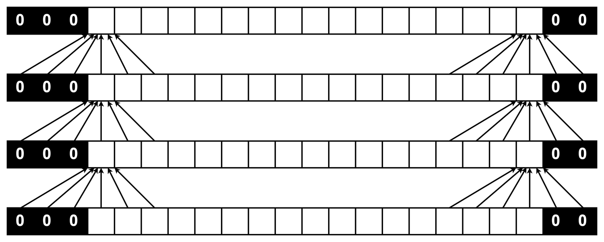
Channels and filter banks
Real inputs have depth. A colour image has \(C_{\text{in}} = 3\) channels; the output of a previous conv layer might have 256. A kernel therefore is not a square but a small volume of shape \(F\times F\times C_{\text{in}}\), and it spans all input channels at once. It slides only in the two spatial dimensions, and each position produces a single scalar — so one kernel of any depth produces exactly one 2-D feature map.
To detect many patterns you use many kernels. A layer with \(C_{\text{out}}\) kernels produces \(C_{\text{out}}\) feature maps, stacked into an output tensor of shape \(H'\times W'\times C_{\text{out}}\). The parameter count is
\[ \#\text{params} \;=\; C_{\text{out}}\bigl(F^2\, C_{\text{in}} + 1\bigr), \]
with the \(+1\) for each kernel's bias. Note what is absent from that expression: \(H\) and \(W\). The same layer costs the same whether you feed it a thumbnail or a megapixel photograph.
Trained CNNs develop a remarkably consistent hierarchy. The first layer learns oriented edges and colour blobs — filters that look a lot like the hand-written edge detectors in the figure above. The second learns corners and simple textures by combining those edges. Deeper layers assemble object parts, and the last conv layers respond to whole objects. Nobody designs this; it falls out of stacking local operations, because a unit deep in the network sees a large patch of input assembled from many small ones.
Pooling
Pooling downsamples a feature map with a fixed, parameter-free rule. A \(2\times2\) window with stride 2 covers each region once and quarters the number of activations. Max pooling keeps the largest value in the window, average pooling the mean.
Pooling does three things: it cuts computation and memory for every layer above it, it enlarges the receptive field quickly, and it grants a limited translation invariance — shift the input by a pixel and many pooled outputs do not change at all.
Many modern architectures drop pooling entirely and downsample with strided convolutions instead. The argument is straightforward: a stride-2 convolution also halves the resolution, but it does so with learned weights rather than a fixed rule, and it costs nothing extra since the convolution was going to happen anyway. Global average pooling — collapsing each channel to a single number just before the classifier — remains near-universal, because it removes the enormous fully connected head that made AlexNet and VGG so parameter-heavy.
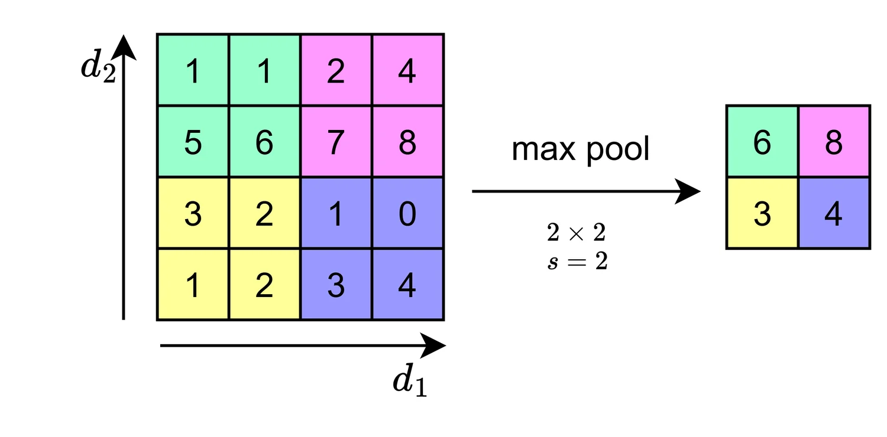
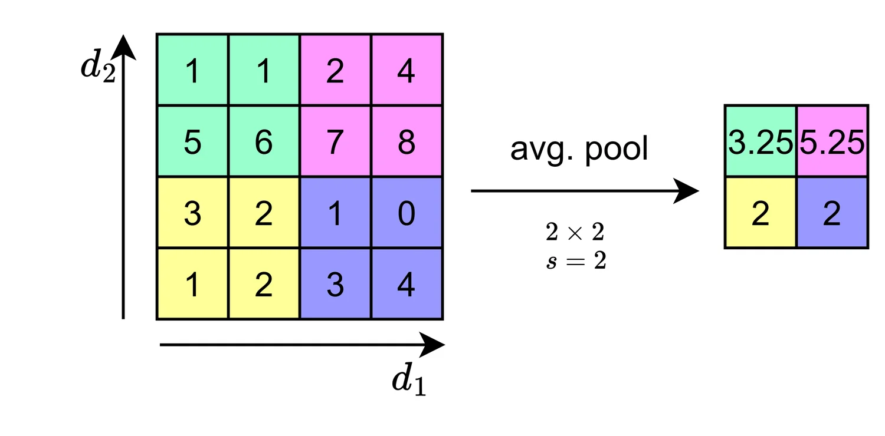
Receptive fields
The receptive field of a unit is the region of the original input that can affect its value. It grows with depth according to
\[ \mathrm{RF}_{\ell} = \mathrm{RF}_{\ell-1} + (F_{\ell}-1)\,\Pi_{\ell-1}, \qquad \Pi_{\ell} = \Pi_{\ell-1}\, S_{\ell}, \]
starting from \(\mathrm{RF}_0 = 1\) and \(\Pi_0 = 1\). The jump \(\Pi_\ell\) is the cumulative stride: the distance in input pixels between two adjacent units at layer \(\ell\).
Two \(3\times3\) layers with stride 1: \(\mathrm{RF}_1 = 1 + 2\cdot1 = 3\), then \(\mathrm{RF}_2 = 3 + 2\cdot 1 = 5\). Three of them reach \(7\). So three stacked \(3\times3\) layers see the same \(7\times7\) window as one \(7\times7\) kernel — but with \(3\cdot 9 C^2 = 27C^2\) parameters instead of \(49C^2\), and with three ReLUs instead of one.
Now give the first layer stride 2. Then \(\Pi_1 = 2\), so the second layer contributes \((3-1)\cdot 2 = 4\) and \(\mathrm{RF}_2 = 3 + 4 = 7\) after only two layers. Strides expand the receptive field aggressively, because every layer above inherits the multiplied jump.
Deeper with smaller kernels beats shallower with bigger ones: the same receptive field, fewer parameters, more nonlinearity. VGG took this to its logical conclusion — \(3\times3\) convolutions everywhere, stride 1, pad 1, with periodic \(2\times2\) max-pooling — and it worked well enough that uniform \(3\times3\) stacks became the default building block for years afterwards.
Backpropagation through a convolution
Nothing new is needed — convolution is a linear map with shared weights, so the chain rule applies exactly as in Chapter 4. The only wrinkle is that because each weight is used at every position, its gradient accumulates over all of them.
Writing \(\delta_{i,j} = \partial \mathcal{L} / \partial Z_{i,j}\) for the gradient arriving at the feature map, the three quantities we need are
\[ \frac{\partial \mathcal{L}}{\partial K_{u,v}} = \sum_{i}\sum_{j} \delta_{i,j}\, X_{\,iS+u,\;jS+v}, \qquad \frac{\partial \mathcal{L}}{\partial b} = \sum_{i}\sum_{j}\delta_{i,j}, \]
\[ \frac{\partial \mathcal{L}}{\partial X_{m,n}} = \sum_{i}\sum_{j} \delta_{i,j}\, K_{\,m-iS,\;n-jS}, \]
where terms with out-of-range indices are dropped. The first is itself a convolution of the input with the incoming gradient; the third is a convolution of the gradient with the flipped kernel, often called the transposed convolution. Both facts are convenient in practice — the backward pass can reuse the same optimised routine as the forward pass.
That sum over all positions is weight sharing showing up in the gradient. A single kernel weight receives a learning signal from every patch in the image, which is a large part of why CNNs are so sample-efficient compared to dense networks: one image supplies thousands of gradient contributions per weight rather than one.
LeNet to EfficientNet
The architectural history of CNNs is unusually legible — each landmark model solved one specific problem left by its predecessor.
| Model (year) | Depth | Params | The idea it contributed |
|---|---|---|---|
| LeNet-5 (1998) | 7 | ≈ 60K | The blueprint itself: alternating conv and subsampling layers feeding a small dense head. Built for \(32\times32\) grayscale digits and trainable on 1990s hardware. |
| AlexNet (2012) | 8 | ≈ 60M | The same blueprint at ImageNet scale — 1.2M images, 1000 classes — made feasible by GPUs, ReLU instead of sigmoid, dropout and heavy augmentation. This is the result that restarted deep learning. |
| VGG-16 (2014) | 16 | ≈ 138M | Depth with uniform \(3\times3\) blocks. Simple and repeatable, but the fully connected tail accounts for most of those 138M parameters. |
| GoogLeNet (2014) | 22 | ≈ 6.8M | Inception modules: parallel \(1\times1\), \(3\times3\), \(5\times5\) and pooling branches concatenated along channels, with \(1\times1\) convolutions as bottlenecks to cut channel depth before the expensive branches. Twenty times fewer parameters than AlexNet. |
| ResNet-50 (2015) | 50 | ≈ 25.6M | Residual connections. Depth stopped being a liability, and ResNet-152 reached 3.57% top-5 ImageNet error. |
| MobileNetV1 (2017) | 28 | ≈ 4.2M | Depthwise separable convolutions, engineered for phones and embedded devices. |
| EfficientNet-B0 (2019) | 19 | ≈ 5.3M | Compound scaling: grow depth, width and resolution together in fixed proportion rather than one at a time. |
Depth here counts layers with learnable parameters, and parameter counts assume standard ImageNet-style configurations at \(224\times224\) input. Both conventions vary between sources, so treat these as approximate.
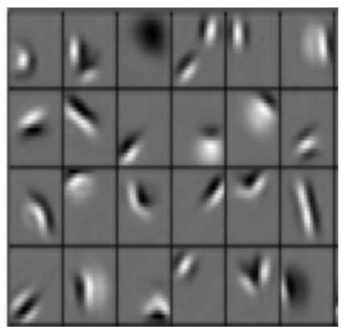
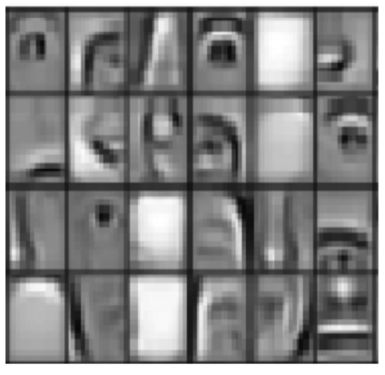
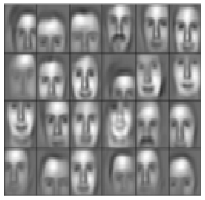
Residual connections
Before 2015, networks deeper than about twenty layers trained worse than shallower ones — not overfitting, but a higher training loss, which is a pure optimisation failure. ResNet's fix was to have each block learn a residual rather than a whole mapping:
\[ \mathbf{y} = \mathcal{F}(\mathbf{x}) + \mathbf{x}. \]
If the best thing a block can do is nothing, it only has to drive \(\mathcal{F}\) to zero, which is easy. More importantly the identity term gives the gradient an unobstructed path backwards: the derivative of \(\mathbf{y}\) with respect to \(\mathbf{x}\) contains \(\mathbf{I}\) plus whatever \(\mathcal{F}\) contributes, so it cannot shrink towards zero the way a long product of Jacobians does. Keep that structure in mind — the GRU's carry path is the same trick applied along time instead of depth.
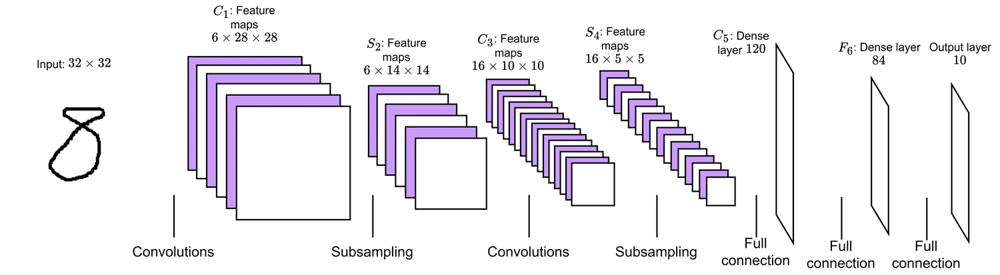
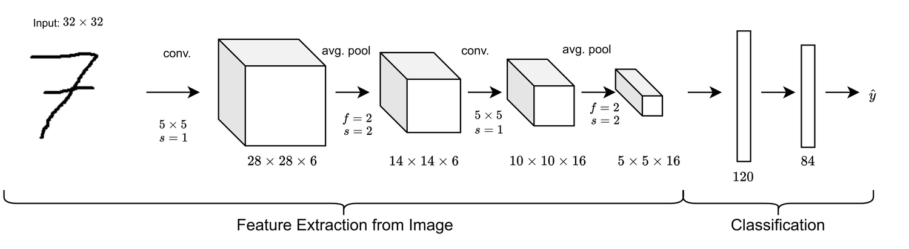
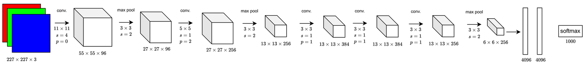
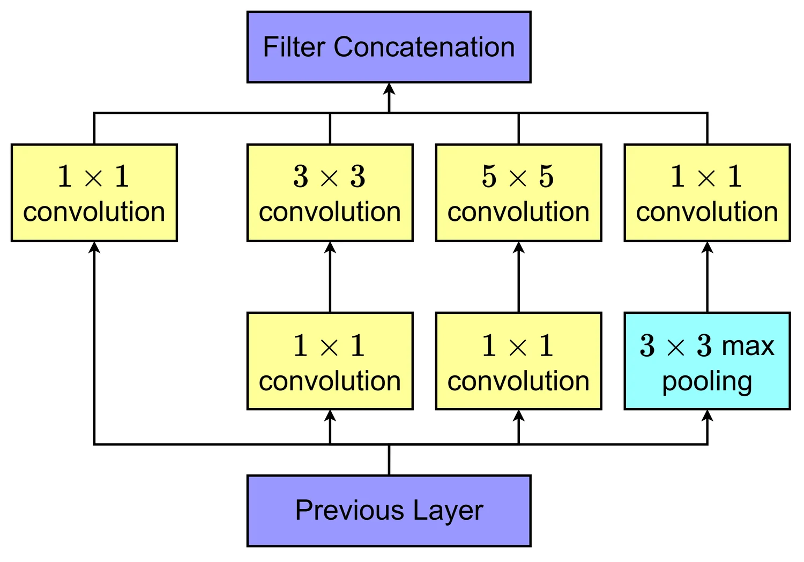
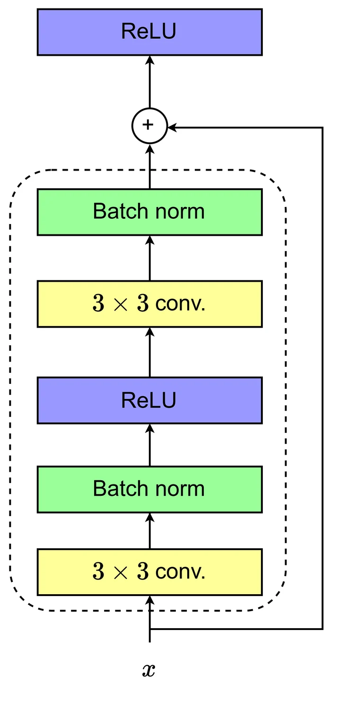
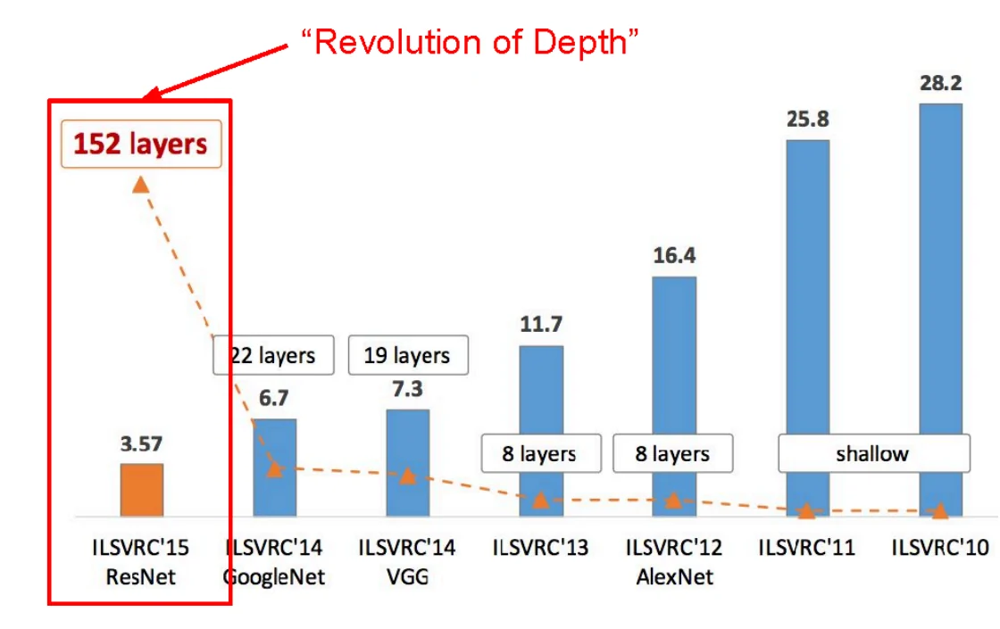
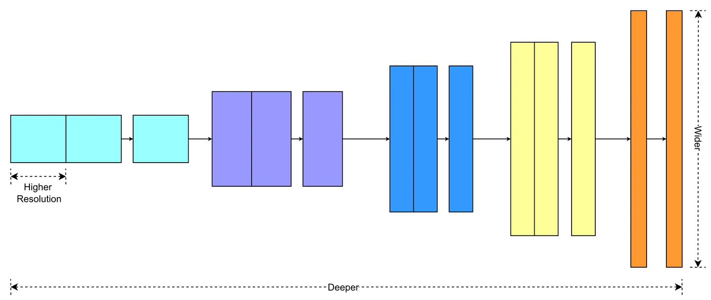
Depthwise separable convolutions
MobileNet's core move is to factor a standard convolution into two cheaper steps: a depthwise convolution applying one \(F\times F\) kernel per input channel independently, then a pointwise \(1\times1\) convolution mixing across channels. The parameter counts are
\[ \underbrace{F^2\, C_{\text{in}} \;+\; C_{\text{in}}\, C_{\text{out}}}_{\text{separable}} \qquad\text{versus}\qquad \underbrace{F^2\, C_{\text{in}}\, C_{\text{out}}}_{\text{standard}}, \]
a reduction by a factor of roughly \(\tfrac{1}{C_{\text{out}}} + \tfrac{1}{F^2}\). For \(F = 3\) and a few hundred output channels that is close to an eight- to nine-fold saving, which is what makes real-time inference on a phone possible.
Compound scaling
EfficientNet observed that people scaled networks along one axis at a time — deeper, or wider, or higher resolution — and that balancing all three works better. With a single coefficient \(\phi\),
\[ \text{depth} = \alpha^{\phi}, \qquad \text{width} = \beta^{\phi}, \qquad \text{resolution} = \gamma^{\phi}, \qquad \text{subject to } \alpha\cdot\beta^2\cdot\gamma^2 \approx 2 . \]
The constraint keeps the FLOP count growing as roughly \(2^{\phi}\): doubling depth doubles the compute, but width and resolution each contribute quadratically, hence the squares. The resulting B0–B7 family reached 84.4% top-1 ImageNet accuracy with 66M parameters at B7, and the smaller members remain practical on mobile hardware.
Read the table top to bottom and one theme dominates: get more capability per parameter. Weight sharing beats dense connections; small stacked kernels beat large ones; \(1\times1\) bottlenecks beat wide layers; residuals let depth pay off; separable convolutions factor away redundancy. None of these make the model bigger. They make it better structured.
Part 5.2 · Recurrent Neural Networks
Convolution builds in an assumption about space. Sequences need an assumption about time. Consider what a feedforward network cannot do with a sentence, a stock price series or an audio waveform:
- Inputs vary in length. A dense layer has a fixed number of input units. Sentences do not have a fixed number of words.
- Order carries meaning. "The dog bit the man" and "the man bit the dog" contain identical words. A bag-of-words model cannot tell them apart.
- Context reaches backwards. Resolving what "it" refers to may require a word from several sentences ago.
A recurrent network handles all three the same way a CNN handles images: by sharing weights across positions. Instead of one weight matrix per time step, there is a single set of parameters applied at every step, together with a hidden state that carries information forward.
A CNN reuses one kernel at every spatial position; an RNN reuses one weight matrix at every time step. Both get the same three benefits — a parameter count independent of input size, the ability to handle inputs of any extent, and a built-in assumption that a pattern worth recognising in one place is worth recognising in another.
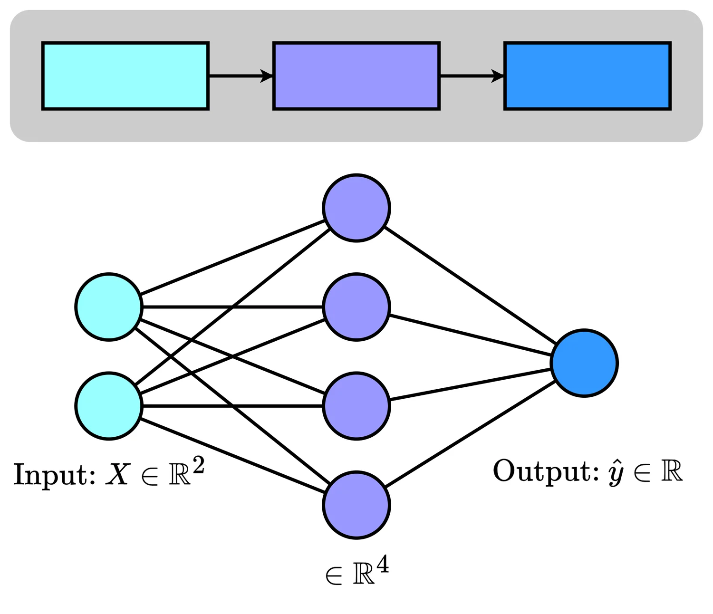
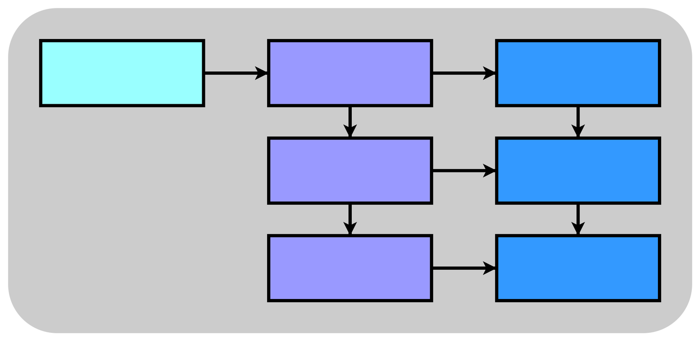
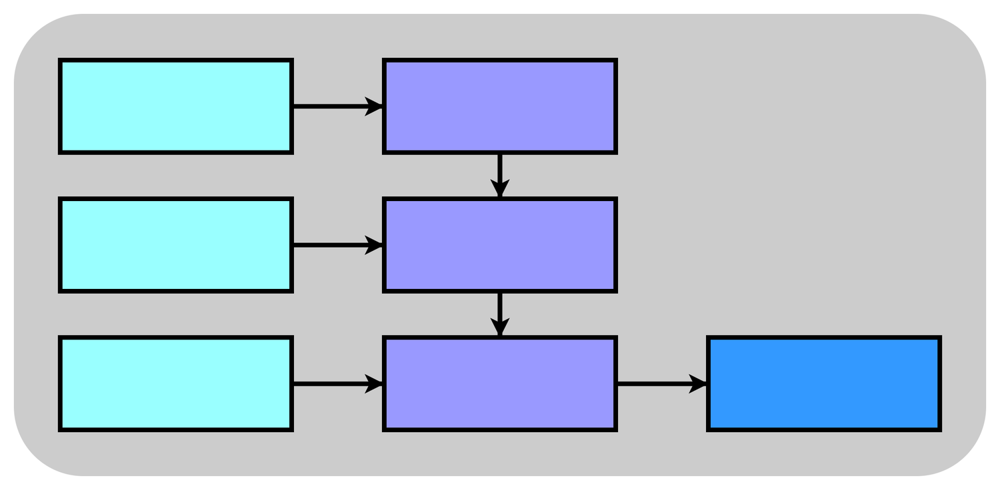
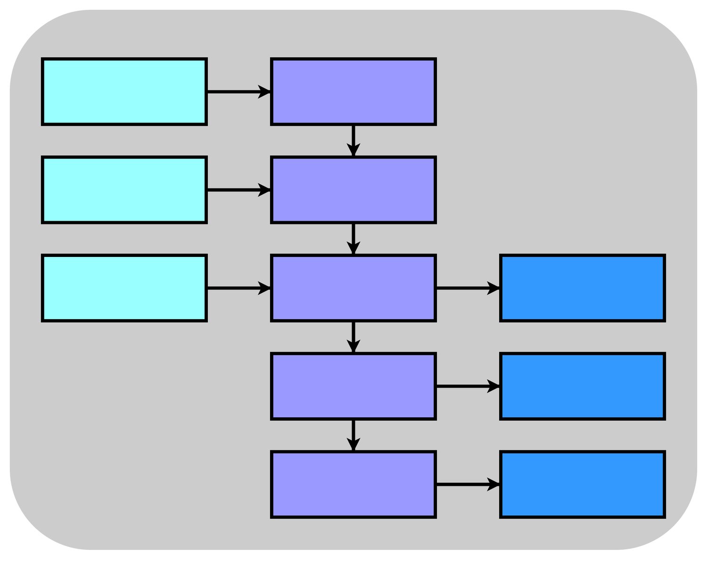
The vanilla RNN
Given an input sequence \(\mathbf{x}_1,\dots,\mathbf{x}_T\), the hidden state evolves as
\[ \mathbf{s}_t = \phi\!\left( \mathbf{U}\mathbf{x}_t + \mathbf{W}\mathbf{s}_{t-1} + \mathbf{b}_s \right), \qquad \hat{\mathbf{y}}_t = g\!\left( \mathbf{V}\mathbf{s}_t + \mathbf{b}_y \right), \]
with \(\mathbf{s}_0 = \mathbf{0}\). Here \(\phi\) is usually \(\tanh\) and \(g\) is softmax for classification. For a vocabulary of size \(d\) and hidden size \(m\), the shapes are \(\mathbf{U}\in\mathbb{R}^{m\times d}\), \(\mathbf{W}\in\mathbb{R}^{m\times m}\) and \(\mathbf{V}\in\mathbb{R}^{d\times m}\).
The three matrices have three distinct jobs: \(\mathbf{U}\) reads the current input, \(\mathbf{W}\) carries the previous state forward, and \(\mathbf{V}\) reads out a prediction. All three are the same at every step — the network drawn "unrolled" across time looks like a deep feedforward network whose layers happen to share weights.
In feedforward networks ReLU is the default. Recurrent layers usually keep \(\tanh\), because the same matrix is applied repeatedly: an unbounded activation compounding over dozens of steps drives the state to enormous values, whereas \(\tanh\) keeps it inside \((-1,1)\) no matter how long the sequence. The price is that \(\tanh' \le 1\) always, which — as the next section shows — is exactly what causes gradients to vanish. Gated architectures resolve the tension by adding a path that avoids the squashing altogether.
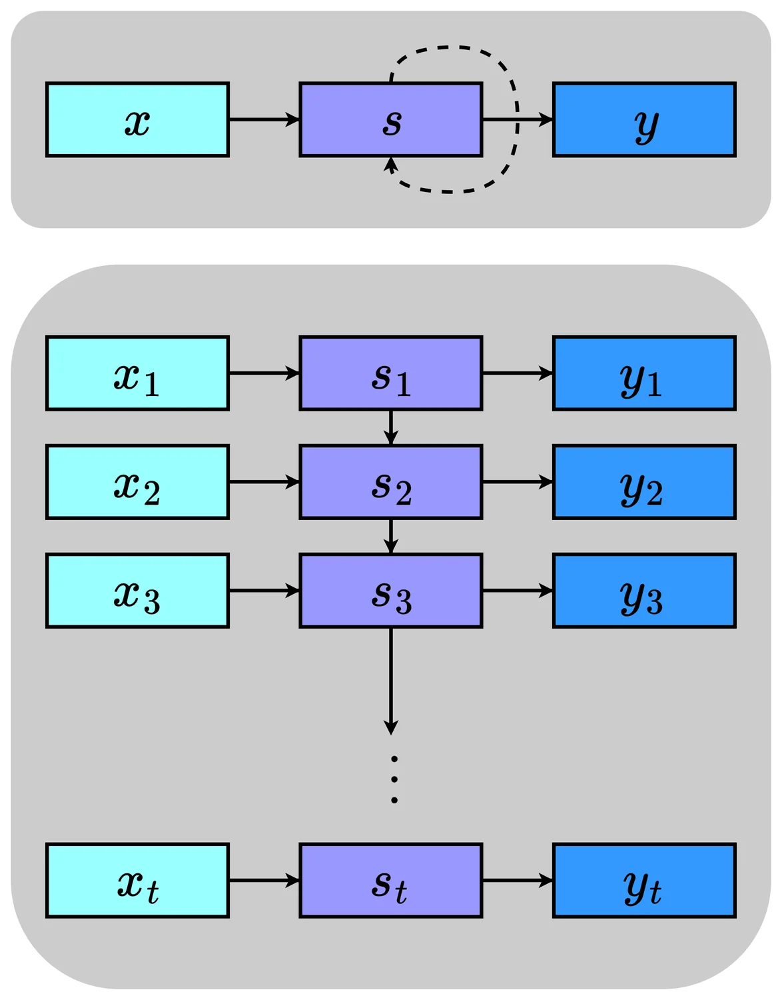
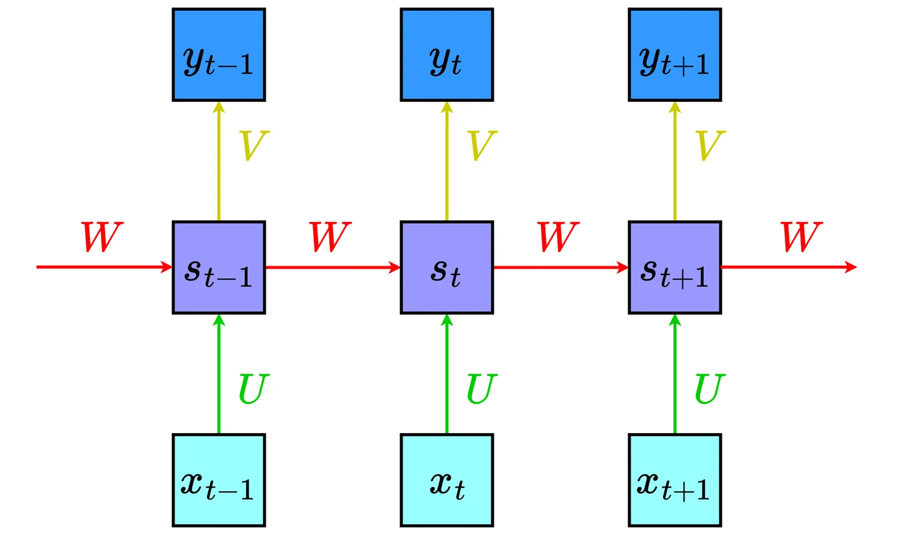
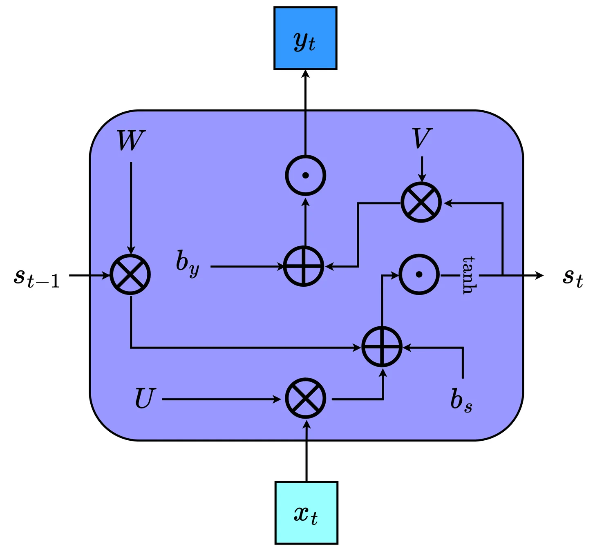
A worked forward pass
The notes work through a character-level example: a vocabulary of \(\{\texttt{H},\texttt{E}, \texttt{L},\texttt{O}\}\), hidden size 3, the sequence H, E, L, L, and a target of O at the final step. Inputs are one-hot, so \(\mathbf{U}\mathbf{x}_t\) simply selects a column of \(\mathbf{U}\).
The figure below recomputes every quantity live from the same \(\mathbf{U}, \mathbf{W}, \mathbf{V}\) and bias, so you can step through the sequence and check any number by hand.
First, the network predicts H at steps 1, 2 and 3 — all wrong relative to the next-character targets. It was only ever arranged to produce O at the final step. That is worth noticing rather than glossing over: an untrained or hand-set RNN has no reason to be right anywhere.
Second, the final answer is very close. The probabilities are 0.3545 for O and 0.3542 for H — a margin of 0.00025. Round any intermediate to three decimals and the answer flips to H. If you work this example by hand, carry at least four decimals throughout.
Backpropagation through time
Training an RNN is ordinary backpropagation applied to the unrolled graph, which earns the name backpropagation through time (BPTT). The total loss sums over steps, \(\mathcal{L} = \sum_{t=1}^{T}\mathcal{L}_t\), and because \(\mathbf{W}\) appears at every step its gradient collects a contribution from each:
\[ \frac{\partial \mathcal{L}}{\partial \mathbf{W}} = \sum_{t=1}^{T} \sum_{k=1}^{t} \frac{\partial \mathcal{L}_t}{\partial \mathbf{s}_t} \left( \prod_{j=k+1}^{t} \frac{\partial \mathbf{s}_j}{\partial \mathbf{s}_{j-1}} \right) \frac{\partial \mathbf{s}_k}{\partial \mathbf{W}} . \]
The inner product of Jacobians is the whole story of recurrent networks. Each factor is
\[ \frac{\partial \mathbf{s}_j}{\partial \mathbf{s}_{j-1}} = \operatorname{diag}\!\bigl(\phi'(\mathbf{a}_j)\bigr)\, \mathbf{W}, \qquad \mathbf{a}_j = \mathbf{U}\mathbf{x}_j + \mathbf{W}\mathbf{s}_{j-1} + \mathbf{b}_s, \]
so propagating a gradient from step \(t\) back to step \(k\) means multiplying \(t-k\) such matrices together. Nothing prevents that product from shrinking or growing geometrically.
Storing every activation for a sequence of length \(T\) costs \(O(T)\) memory, which is impractical for long sequences. In practice the gradient is truncated after \(k\) steps: the forward pass runs the full sequence but the backward pass only unrolls a fixed window. This bounds memory and compute, at the cost of never learning dependencies longer than \(k\).
Vanishing and exploding gradients
Take the scalar case to see the mechanism plainly. With a single hidden unit and recurrent weight \(w\), each Jacobian factor is \(w\,\phi'\), so the gradient reaching step \(k\) from step \(t\) is scaled by \((w\,\phi')^{\,t-k}\). Since \(\tanh'(z) \le 1\) with equality only at \(z=0\), and \(\tanh'\) is typically far smaller once the unit saturates:
- if \(|w\,\phi'| < 1\), the factor decays geometrically — the gradient vanishes and early inputs receive essentially no credit;
- if \(|w\,\phi'| > 1\), it grows geometrically — the gradient explodes and training diverges.
With \(w = 0.8\) and \(\tanh' \approx 0.25\), the per-step factor is \(0.20\). Over a sequence of length 10, the gradient arriving at \(t=1\) is scaled by \(0.2^{9} = 5.12\times 10^{-7}\) — about two parts in ten million. The first character of the sequence has, for all practical purposes, no influence on learning.
Exploding gradients are loud and easy to fix — the loss becomes NaN, and gradient clipping (rescaling any gradient whose norm exceeds a threshold) handles it in one line of code. Vanishing gradients are silent. Nothing crashes; the model simply never learns long-range dependencies, and you are left wondering why it plateaus. That asymmetry is why architectural solutions were needed, and it is what LSTM and GRU were designed to provide.
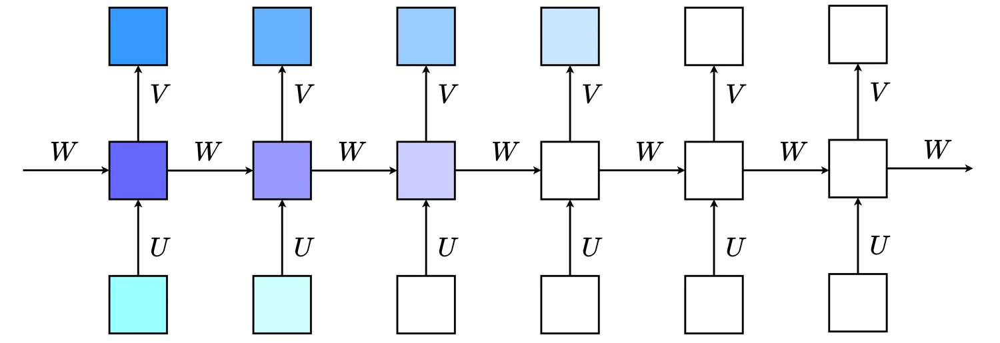
Long short-term memory
An LSTM adds a second state — the cell state \(\mathbf{c}_t\) — whose update is almost entirely additive, and three gates that decide what flows in, out and away. Each gate is a sigmoid layer producing values in \((0,1)\), used to scale a vector elementwise.
\[ \begin{aligned} \mathbf{f}_t &= \sigma\!\left(\mathbf{W}_f[\mathbf{s}_{t-1},\mathbf{x}_t] + \mathbf{b}_f\right) &&\text{forget gate} \\ \mathbf{i}_t &= \sigma\!\left(\mathbf{W}_i[\mathbf{s}_{t-1},\mathbf{x}_t] + \mathbf{b}_i\right) &&\text{input gate} \\ \tilde{\mathbf{c}}_t &= \tanh\!\left(\mathbf{W}_c[\mathbf{s}_{t-1},\mathbf{x}_t] + \mathbf{b}_c\right) &&\text{candidate} \\ \mathbf{c}_t &= \mathbf{f}_t \odot \mathbf{c}_{t-1} + \mathbf{i}_t \odot \tilde{\mathbf{c}}_t &&\text{cell update} \\ \mathbf{o}_t &= \sigma\!\left(\mathbf{W}_o[\mathbf{s}_{t-1},\mathbf{x}_t] + \mathbf{b}_o\right) &&\text{output gate} \\ \mathbf{s}_t &= \mathbf{o}_t \odot \tanh(\mathbf{c}_t) &&\text{hidden state} \end{aligned} \]
The cell update line is the important one. Differentiating it gives \(\partial \mathbf{c}_t / \partial \mathbf{c}_{t-1} \approx \operatorname{diag}(\mathbf{f}_t)\) — no weight matrix, no \(\tanh'\). If the forget gate stays near 1, the gradient passes backwards almost unchanged for as many steps as you like. This is the constant error carousel, and it is structurally the same idea as a residual connection, laid along time rather than depth.
A standard trick is to initialise \(\mathbf{b}_f\) to 1 or 2, so the forget gate starts near 1 and the network begins life remembering by default. It then learns what to discard, rather than having to discover from scratch that keeping information is useful.
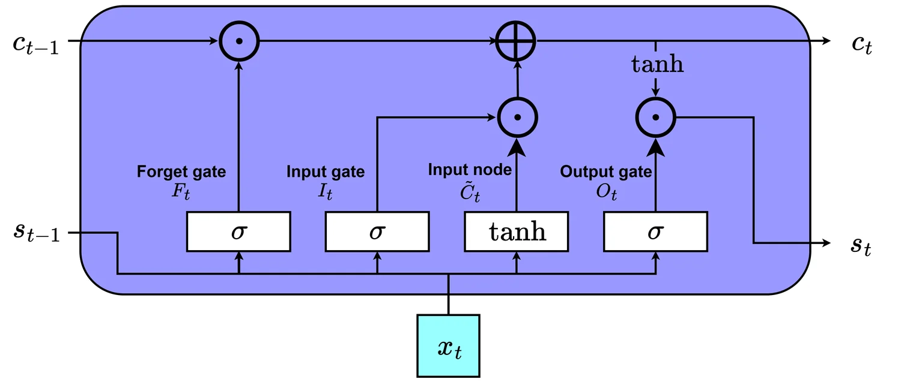
Gated recurrent units
The GRU reaches the same goal with fewer moving parts: no separate cell state, and two gates instead of three.
\[ \begin{aligned} \mathbf{z}_t &= \sigma\!\left(\mathbf{W}_z[\mathbf{s}_{t-1},\mathbf{x}_t] + \mathbf{b}_z\right) &&\text{update gate} \\ \mathbf{r}_t &= \sigma\!\left(\mathbf{W}_r[\mathbf{s}_{t-1},\mathbf{x}_t] + \mathbf{b}_r\right) &&\text{reset gate} \\ \tilde{\mathbf{s}}_t &= \tanh\!\left(\mathbf{W}_h[\mathbf{r}_t \odot \mathbf{s}_{t-1},\, \mathbf{x}_t] + \mathbf{b}_h\right) &&\text{candidate} \\ \mathbf{s}_t &= (1-\mathbf{z}_t)\odot \mathbf{s}_{t-1} + \mathbf{z}_t \odot \tilde{\mathbf{s}}_t &&\text{blend} \end{aligned} \]
The final line is a weighted average between keeping the old state and adopting the new candidate. The update gate \(\mathbf{z}_t\) sets the blend; the reset gate \(\mathbf{r}_t\) decides how much of the old state the candidate is even allowed to see.
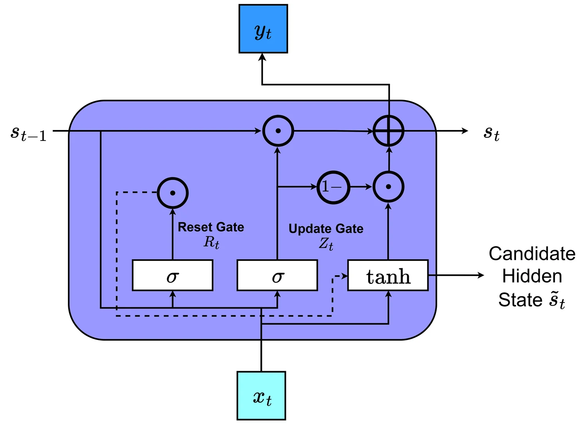
Two edge cases
Reducing the step Jacobian to a scalar makes the gating benefit concrete. Along the carry path,
\[ g \;=\; \frac{\partial s_t}{\partial s_{t-1}} \;\approx\; (1 - z_t) \;+\; z_t\,\tanh'\!\cdot\, w_h\, r_t . \]
The reset gate is shut, so the candidate contributes nothing to the derivative and \(g = 1 - z = 0.90\). Over ten steps the gradient reaching \(t=1\) is scaled by \(0.9^{9} = 0.387\) — compared with \(5.12\times10^{-7}\) for the vanilla RNN. That is a difference of roughly six orders of magnitude.
\[ g = (1 - 0.3) + 0.3 \cdot 0.25 \cdot 1.0 \cdot 1 = 0.7 + 0.075 = 0.775, \]
still comfortably close to 1. Even when the unit is actively mixing in new information, the linear carry term dominates.
In a vanilla RNN every path from \(s_t\) back to \(s_{t-1}\) passes through a \(\tanh\), so every path is multiplied by \(\tanh' \le 1\), and a saturated unit contributes almost nothing. In a GRU the term \((1-z_t)\,s_{t-1}\) has no nonlinearity on it at all. It cannot saturate, and its derivative is exactly \(1 - z_t\). The network can therefore choose, per unit and per step, how open to leave that channel — which means it can learn to preserve some quantities across hundreds of steps while updating others every step.
Writing \(g \approx (1-z_t) + z_t\tanh'\,w_h r_t\) treats the gates as constants. They are not — \(\mathbf{z}_t\) and \(\mathbf{r}_t\) both depend on \(\mathbf{s}_{t-1}\), so the exact derivative also contains \((\tilde{s}_t - s_{t-1})\,\partial z_t/\partial s_{t-1}\) and a term through \(\partial r_t / \partial s_{t-1}\). Both are usually small — sigmoid derivatives are at most \(0.25\), and the first is further scaled by the gap between candidate and current state — so the approximation is a good guide to the magnitude. It is not the exact Jacobian, and the omitted terms are what an autodiff framework actually computes.
LSTM or GRU?
| LSTM | GRU | |
|---|---|---|
| Gates | 3 (forget, input, output) | 2 (update, reset) |
| States | 2 — hidden and cell | 1 — hidden only |
| Parameters per unit | ≈ 4 weight blocks | ≈ 3 weight blocks (about 25% fewer) |
| Carry mechanism | Additive cell update gated by \(\mathbf{f}_t\) | Convex blend gated by \(1-\mathbf{z}_t\) |
| Tends to suit | Long sequences, larger datasets | Shorter sequences, less data, tighter compute |
Empirically the two perform comparably on most tasks, and the honest answer is to try both. The GRU is cheaper and often trains faster; the LSTM's separate cell state gives it a little more room on very long dependencies.
Part 5.3 · Transformers
Gating fixed the gradient problem. It did not fix the two structural limits of recurrence.
Recurrence is sequential
\(\mathbf{s}_t\) cannot be computed until \(\mathbf{s}_{t-1}\) exists. A sequence of length \(T\) requires \(T\) sequential steps no matter how much hardware you have. GPUs are built for parallel work, and recurrence refuses to give them any.
Information travels step by step
For token 100 to use token 1, the signal must survive 99 gated updates through a fixed-size state. Gating slows the decay; it does not remove the bottleneck, and it does not remove the \(O(T)\) path length between distant positions.
The transformer's answer is to abandon recurrence entirely. Every position looks at every other position directly, in one step, through a learned weighting called attention. Path length between any two tokens drops from \(O(T)\) to \(O(1)\), and because there is no sequential dependency, the whole sequence is processed in parallel.
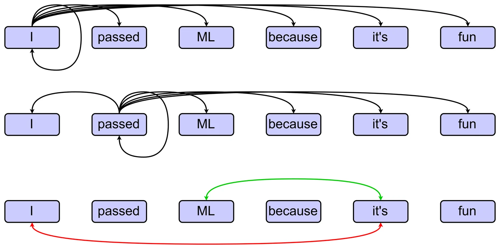
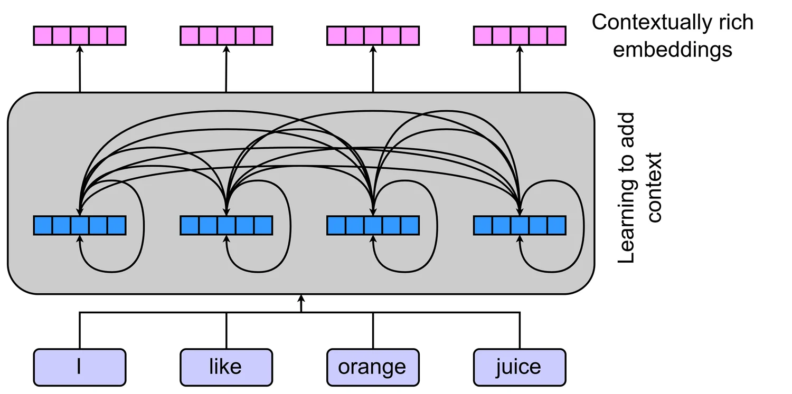
Tokens and embeddings
Before any of that, text has to become numbers. Tokenisation splits the input into units — typically subwords, so that rare words decompose into familiar pieces and the vocabulary stays bounded. Each token maps to an index, and each index to a learned vector via an embedding matrix \(\mathbf{E}\in\mathbb{R}^{|\mathcal{V}|\times d_{\text{model}}}\).
A sequence of \(T\) tokens becomes a matrix \(\mathbf{X}\in\mathbb{R}^{T\times d_{\text{model}}}\), one row per token. Unlike one-hot vectors, embeddings are dense and learned, so semantically related tokens end up near each other in the space — a representation the model builds for itself during training.
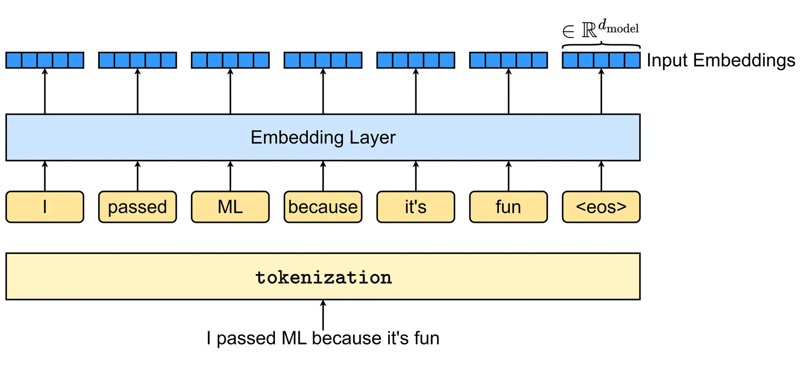
Positional encoding
This is easy to miss and central to the design. Self-attention computes a weighted sum over positions, and a sum does not care about order. Permute the rows of \(\mathbf{X}\) and the outputs permute identically — the operation is permutation-equivariant. Without help, a transformer literally cannot distinguish "the dog bit the man" from "the man bit the dog".
Position is therefore injected explicitly, by adding a positional vector to each embedding. The original sinusoidal scheme uses
\[ PE_{(p,\,2i)} = \sin\!\left(\frac{p}{10000^{2i/d_{\text{model}}}}\right), \qquad PE_{(p,\,2i+1)} = \cos\!\left(\frac{p}{10000^{2i/d_{\text{model}}}}\right), \]
where \(p\) is the position and \(i\) indexes dimension pairs. Channel \(i\) is a sinusoid of wavelength \(2\pi\cdot 10000^{2i/d_{\text{model}}}\), so the encoding spans wavelengths from \(2\pi\) up to tens of thousands of positions — fast oscillations resolve neighbouring positions, slow ones give coarse absolute location.
You could simply learn one vector per position, and many models do. The sinusoidal scheme has two advantages. It extrapolates: the formula is defined for any \(p\), so the model can be run on sequences longer than any it saw in training, where a lookup table would have no entry. And it makes relative position linearly accessible — \(PE(p+k)\) is a fixed linear function of \(PE(p)\) for any offset \(k\), by the angle-addition identities, so a linear layer can learn to attend "three tokens back" as a single operation.
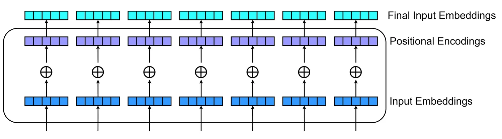
Self-attention
Each token produces three vectors by linear projection: a query (what am I looking for?), a key (what do I offer?) and a value (what do I pass on if selected?).
\[ \mathbf{Q} = \mathbf{X}\mathbf{W}^Q, \qquad \mathbf{K} = \mathbf{X}\mathbf{W}^K, \qquad \mathbf{V} = \mathbf{X}\mathbf{W}^V . \]
\[ \operatorname{Attention}(\mathbf{Q},\mathbf{K},\mathbf{V}) = \operatorname{softmax}\!\left( \frac{\mathbf{Q}\mathbf{K}^{\!\top}}{\sqrt{d_k}} \right) \mathbf{V}, \]
where the softmax is applied row-wise and \(d_k\) is the dimension of the key vectors.
Read it in three steps. \(\mathbf{Q}\mathbf{K}^{\!\top}\) is a \(T\times T\) matrix of raw compatibility scores — entry \((i,j)\) is the dot product of token \(i\)'s query with token \(j\)'s key. The row-wise softmax turns each row into a probability distribution over all positions. Multiplying by \(\mathbf{V}\) then forms, for each token, a weighted average of every value vector in the sequence.
That \(T\times T\) matrix is the transformer's defining trade-off. Path length between any two tokens is \(O(1)\) and the computation parallelises perfectly — but memory and compute scale as \(O(T^2)\). Doubling the context length quadruples the cost, which is why long-context models require specialised attention variants (sparse, linear, sliding-window, or IO-aware implementations such as FlashAttention).
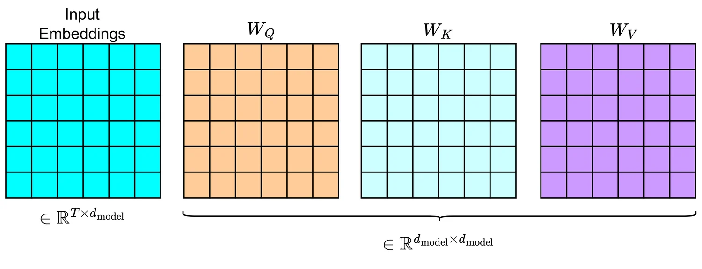
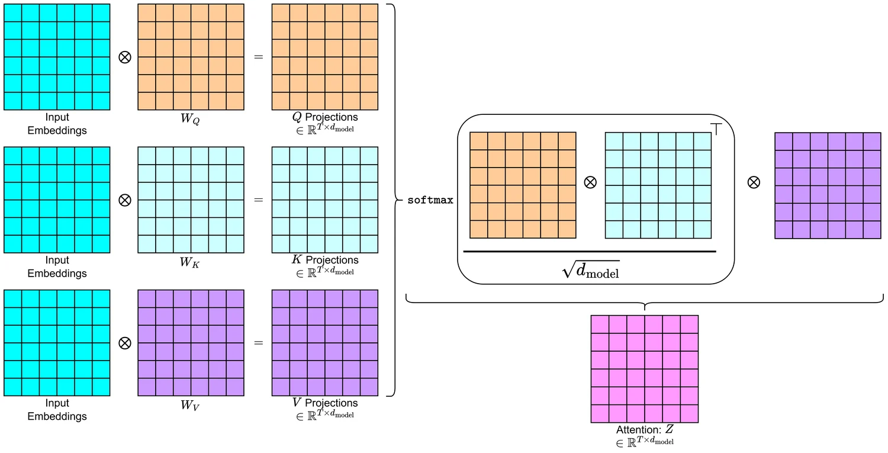
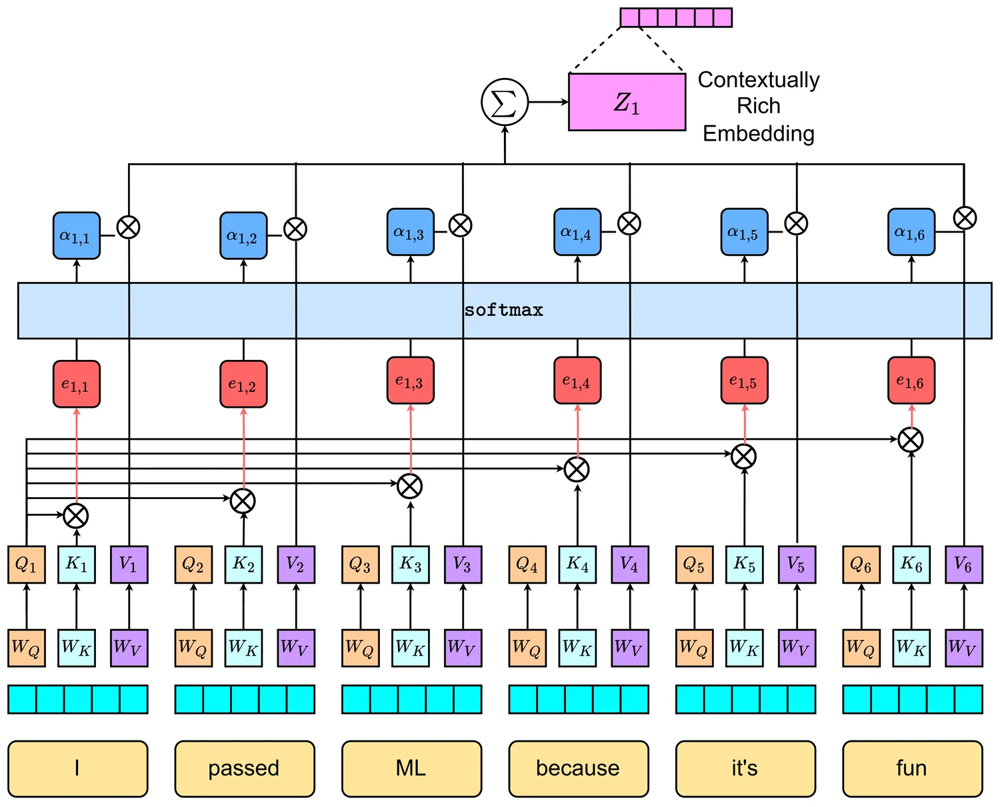
Why divide by \(\sqrt{d_k}\)
The \(1/\sqrt{d_k}\) is not cosmetic. Suppose the entries of \(\mathbf{q}\) and \(\mathbf{k}\) are independent with mean 0 and variance \(\sigma^2\). Their dot product \(\mathbf{q}^{\!\top}\mathbf{k} = \sum_{i=1}^{d_k} q_i k_i\) is a sum of \(d_k\) independent terms, each with variance \(\sigma^4\), so
\[ \operatorname{Var}\!\left(\mathbf{q}^{\!\top}\mathbf{k}\right) = d_k\,\sigma^4 . \]
The logits therefore have standard deviation growing like \(\sqrt{d_k}\). Feed large-magnitude logits into a softmax and it saturates: one weight approaches 1, all others approach 0. Since the softmax gradient is proportional to \(o(1-o)\), a saturated output has essentially zero gradient and the layer stops learning. Dividing by \(\sqrt{d_k}\) cancels the growth exactly, holding the logit spread near 1 whatever the dimension.
Multi-head attention
A single attention operation produces one weighting per token, so it can express one kind of relationship. Language has several at once — syntactic agreement, coreference, semantic similarity — and no single distribution captures them all. Multi-head attention runs \(h\) attention operations in parallel on lower-dimensional projections:
\[ \operatorname{MultiHead}(\mathbf{Q},\mathbf{K},\mathbf{V}) = \operatorname{Concat}(\text{head}_1,\dots,\text{head}_h)\,\mathbf{W}^O, \] \[ \text{head}_i = \operatorname{Attention} \bigl(\mathbf{X}\mathbf{W}^Q_i,\; \mathbf{X}\mathbf{W}^K_i,\; \mathbf{X}\mathbf{W}^V_i\bigr). \]
Each head works in a reduced space of size \(d_k = d_v = d_{\text{model}}/h\), so \(\mathbf{W}^Q_i, \mathbf{W}^K_i \in \mathbb{R}^{d_{\text{model}}\times d_k}\) and \(\mathbf{W}^V_i \in \mathbb{R}^{d_{\text{model}}\times d_v}\). Concatenating \(h\) heads of width \(d_v\) gives back \(h\cdot d_v = d_{\text{model}}\), so the output projection is \(\mathbf{W}^O \in \mathbb{R}^{d_{\text{model}}\times d_{\text{model}}}\).
Because the per-head width shrinks as the head count grows, multi-head attention costs about the same as single-head attention at full width. You get several distinct relationships for the price of one. Note also that the scaling factor is \(1/\sqrt{d_k}\) — the per-head dimension — not \(1/\sqrt{d_{\text{model}}}\); with \(h = 8\) these differ by a factor of \(\sqrt{8}\).
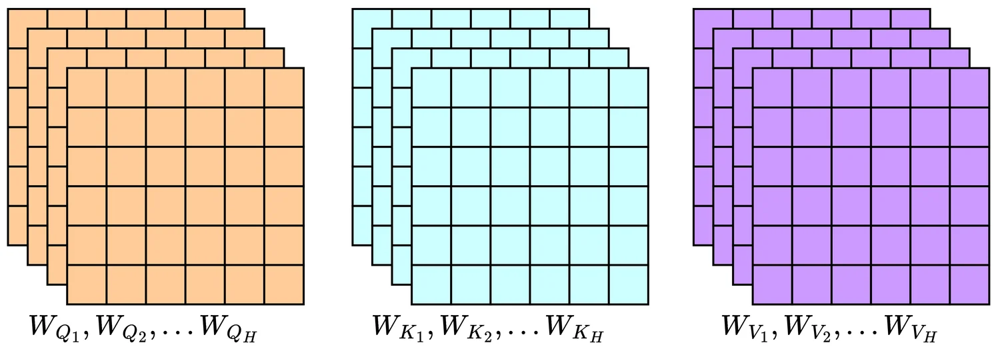
Masking and training objectives
A language model predicting the next token must not be allowed to read it. The fix is a causal mask: set the upper triangle of the score matrix to \(-\infty\) before the softmax, so those weights become exactly zero.
\[ E_{ij} \;\leftarrow\; \begin{cases} E_{ij}, & j \le i, \\[2pt] -\infty, & j > i . \end{cases} \]
Using \(-\infty\) rather than deleting the entries keeps the operation a clean matrix multiplication — every row is still a full-width softmax, it just assigns zero mass to the future. Toggle the mask in the attention figure to watch the upper triangle empty out.
Two masking choices give the two dominant pre-training objectives.
Autoregressive (GPT-style)
Causal mask throughout; predict token \(t+1\) from tokens \(1..t\).
\[ \mathcal{L} = -\sum_{t} \log P(x_t \mid x_{<t}) \]
Every position supplies a training signal in a single forward pass, and the model can generate text directly by sampling one token at a time.
Masked (BERT-style)
No causal mask — every token sees the full sequence. A random subset of tokens (typically 15%) is replaced by [MASK] and must be reconstructed.
\[ \mathcal{L} = -\sum_{t \in \mathcal{M}} \log P(x_t \mid \mathbf{x}_{\setminus \mathcal{M}}) \]
Bidirectional context gives richer representations for understanding tasks, but the model cannot generate autoregressively and only the masked positions contribute gradient.
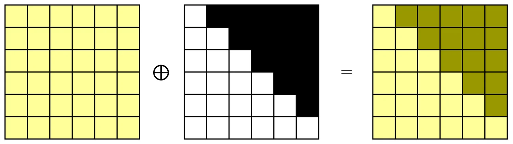
The block, assembled
Each architecture encodes a prior about which inputs are related. A CNN assumes nearby in space — fixed, local, hard-coded, and extremely efficient when true. An RNN assumes recently in time — a decaying window, adaptive but sequential. A transformer assumes nothing and learns the relationships, which is why it needs far more data and \(O(T^2)\) compute, and why it wins once you have both. The progression is not "newer is better" but a steady trade of built-in structure for learned structure.
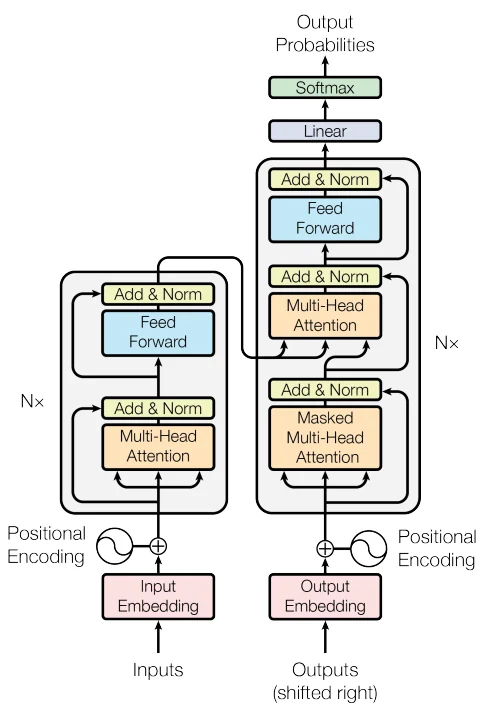
Errata and verification
Every numerical claim in both source chapters was recomputed independently before conversion: the convolution arithmetic, all seven architectures' parameter counts, the receptive-field recurrences, the complete four-step RNN forward pass, both gradient-decay tables and both GRU edge cases. The entire CNN chapter checked out, as did every hidden state, output, probability and loss in the RNN example. Six items needed attention.
| Section | Original notes | Corrected to | Why |
|---|---|---|---|
| RNN example, \(t=2\) | Pre-activation \(= [1.7272,\; 1.9227,\; 1.0029]\) | \([1.7091,\; 1.8226,\; 1.0017]\) | With \(\mathbf{U}\mathbf{x}_2 = [0.8461, 0.8715, 0.0922]\), \(\mathbf{W}\mathbf{s}_1 = [0.2960, 0.3841, 0.3425]\) and \(b = 0.567001\), the second component is \(0.8715 + 0.3841 + 0.5670 = 1.8226\), not 1.9227 — an error of 0.10. The published \(\mathbf{s}_2 = [0.9365, 0.9491, 0.7623]\) is the \(\tanh\) of the corrected vector, so only the displayed intermediate was wrong and nothing downstream is affected. |
| RNN example, \(t=3\) | \(\mathbf{W}\mathbf{s}_2 = [0.3999, 0.4059, 0.3259]\), pre-act \([1.5393, 1.6640, 1.4512]\) | \([0.3999, 0.4053, 0.3255]\), pre-act \([1.5393, 1.6634, 1.4507]\) | Rounding drift of about \(6\times10^{-4}\). \(0.4270 \times 0.9491 = 0.40527\), not 0.4059. Immaterial to the result, but the exact figures are given here. |
| RNN example, \(t=4\) | \(\mathbf{W}\mathbf{s}_3 = [0.3894, 0.3971, 0.3823]\) | \([0.3894, 0.3974, 0.3825]\) | Rounding again, at the fourth decimal. |
| Multi-head dimensions | "\(d_{\text{model}} = d_{\text{model}}/h\)" | \(d_k = d_v = d_{\text{model}}/h\) | As printed the statement is self-contradictory — it asserts that a quantity equals itself divided by \(h\). The intended claim is that the per-head key and value dimensions are \(d_{\text{model}}/h\). |
| Output projection shape | \(\mathbf{W}^O \in \mathbb{R}^{(h\cdot d_{\text{model}})\times d_{\text{model}}}\) | \(\mathbf{W}^O \in \mathbb{R}^{d_{\text{model}}\times d_{\text{model}}}\) | Follows from the previous row. Concatenating \(h\) heads each of width \(d_v = d_{\text{model}}/h\) gives \(h \cdot d_v = d_{\text{model}}\) columns, not \(h\cdot d_{\text{model}}\). The published shape would make \(\mathbf{W}^O\) \(h\) times too large. |
| Attention scaling factor | \(\operatorname{softmax}(\mathbf{Q}\mathbf{K}^{\!\top}/\sqrt{d_{\text{model}}})\) | \(\operatorname{softmax}(\mathbf{Q}\mathbf{K}^{\!\top}/\sqrt{d_k})\) | The variance argument in the same section derives \(\operatorname{Var} = d_k\sigma^4\) and concludes \(1/\sqrt{d_k}\), so the formula as written contradicts its own justification. The two agree only for single-head attention; with \(h=8\) heads they differ by \(\sqrt{8}\). |
Ambiguities clarified rather than corrected
| Section | Issue | How it is handled here |
|---|---|---|
| Receptive field, second example | "Insert a stride-2 between them" — the printed answer of \(\mathrm{RF}=7\) corresponds to giving the first convolution stride 2. Reading it as inserting a separate \(2\times2\) stride-2 pooling layer between two \(3\times3\) convolutions gives 8. | Stated explicitly as "give the first layer stride 2", which reproduces the printed 7. Build both configurations in the receptive-field figure to see the difference. |
| GRU step Jacobian | The derivation presents \(\partial s_t/\partial s_{t-1} \approx (1-z_t) + z_t\tanh' w_h r_t\) and notes only that the \(\partial r_t/\partial s_{t-1}\) term is small. The \((\tilde{s}_t - s_{t-1})\,\partial z_t/\partial s_{t-1}\) term is omitted without comment. | Both omitted terms are named, with the reason they are usually negligible and a note that the expression is an approximation rather than the exact Jacobian. |
| Final-step margin | The example's headline result — that the network predicts \(\texttt{O}\) at \(t=4\) — holds by a probability margin of \(0.000251\) (0.35447 against 0.35420). The source file carries a comment recording that a row of \(\mathbf{V}\) was adjusted to make it come out that way. | Kept as written, since it is correct, but flagged prominently: anyone recomputing with three-decimal intermediates will get \(\texttt{H}\) instead. |
Verified correct, for the record: the \(14\times14\) with \(4\times4\)/stride-2 convolution giving \(6\times6\); AlexNet's \(227 \to 55\) and its \(34{,}848\) first-layer weights; both receptive-field recurrences and all three stacking examples; the VGG parameter comparison (\(27C^2\) against \(49C^2\)); the depthwise-separable parameter formula; every entry of the architecture table — LeNet-5 (7 layers, 60K), AlexNet (8, 60M), VGG-16 (16, 138M), GoogLeNet (22, 6.8M), ResNet-50 (50, 25.6M), MobileNetV1 (28, 4.2M), EfficientNet-B0 (19, 5.3M); ResNet's 3.57% top-5 error at 152 layers; EfficientNet's 84.4% top-1 at 66M and the \(\alpha\beta^2\gamma^2 \approx 2\) constraint; all three backpropagation-through-convolution formulas; every \(\mathbf{s}_t\), \(\mathbf{y}_t\) and \(\mathbf{p}_t\) in the RNN example and all four losses (1.753711, 1.991525, 2.044423, 1.037102); the complete LSTM and GRU equation sets; all ten entries of the vanilla-RNN gradient-decay table \((0.20)^{T-t}\) and all ten of the GRU table \((0.90)^{T-t}\); both GRU edge cases (\(g = 0.90\) and \(g = 0.775\)); the positional-encoding formulas; the \(\operatorname{Var} = d_k\sigma^4\) derivation; the causal-mask construction; and both training objectives.
Each claim was recomputed from scratch in Python, then cross-checked against the JavaScript in the figures on this page — which compute their results live rather than displaying stored answers. Two independent implementations agreeing is a much stronger check than either alone. Found something we missed? Please write to mialhajri@aus.edu.